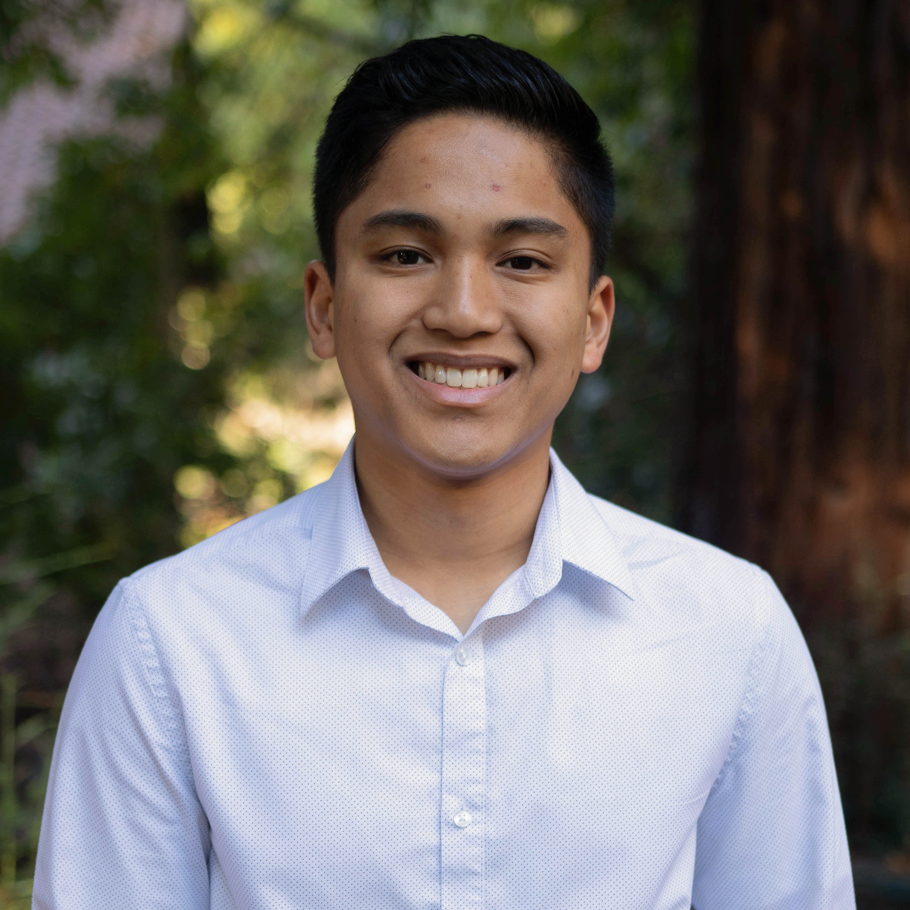
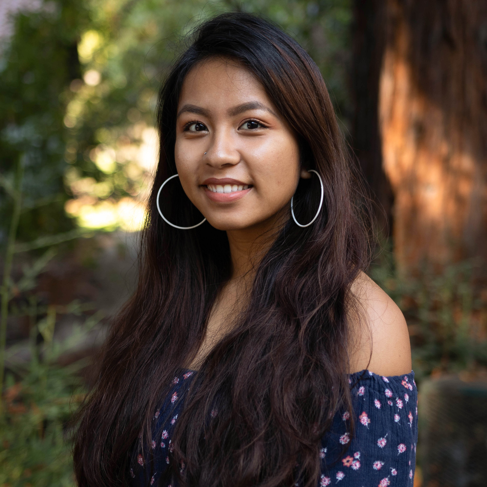
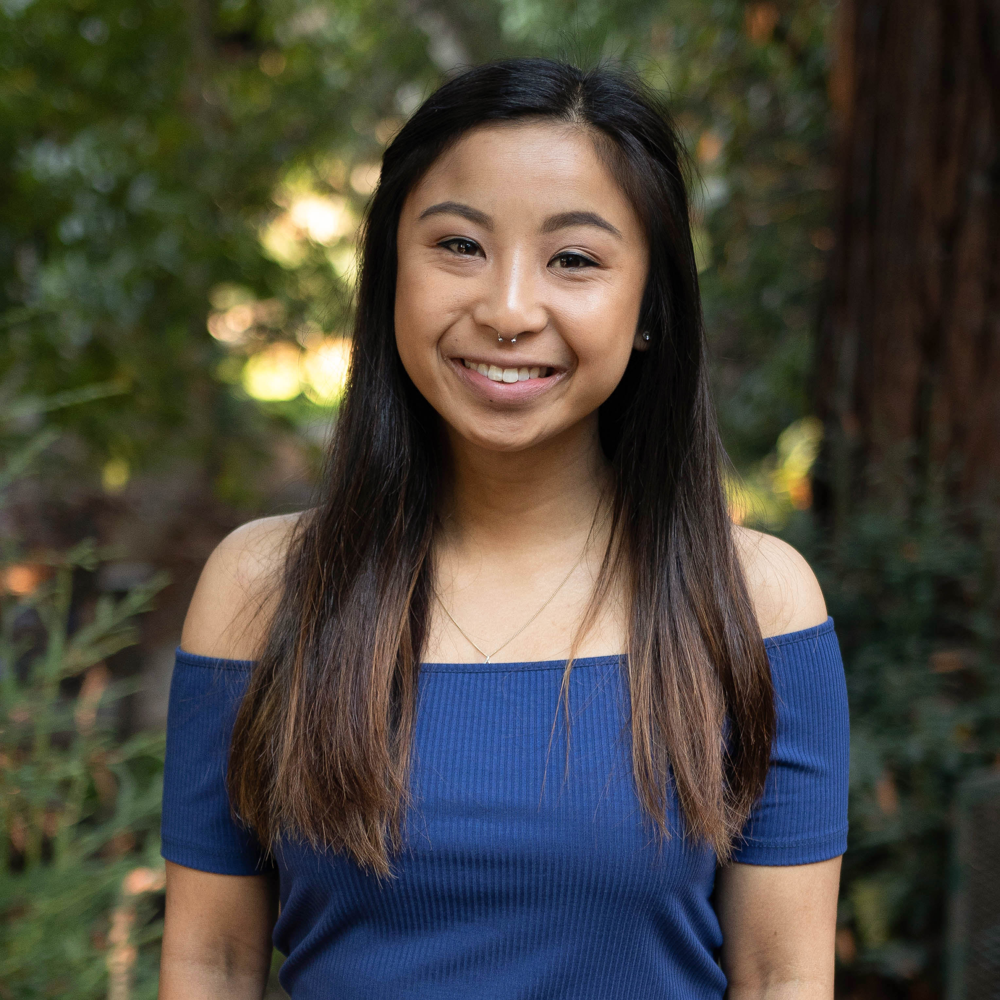
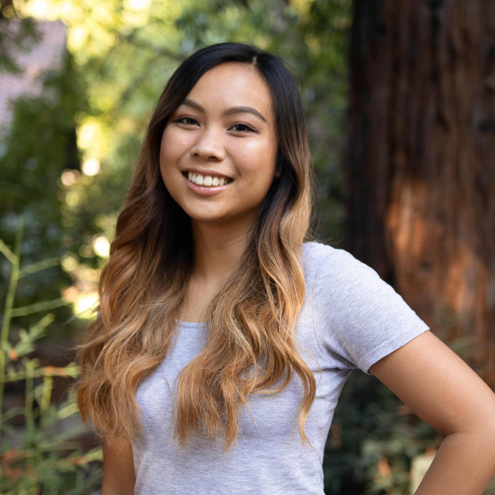
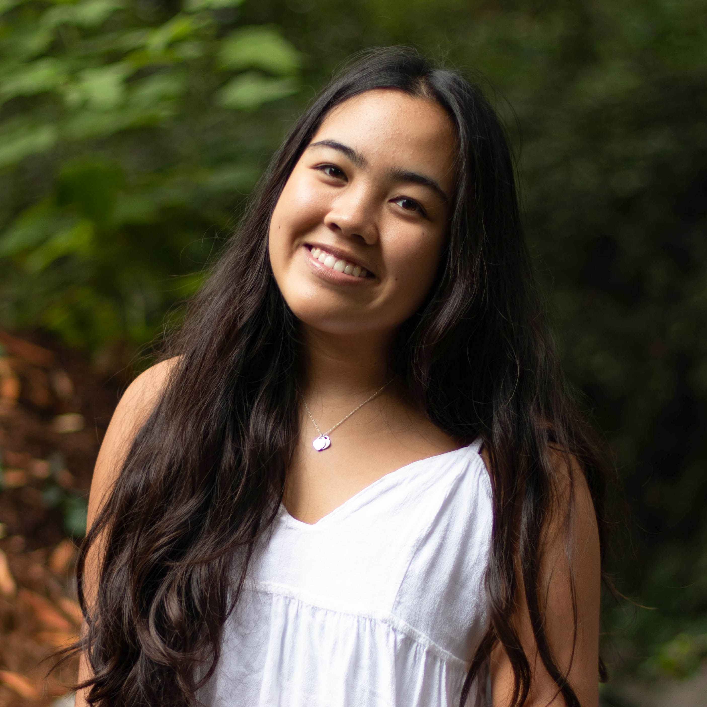
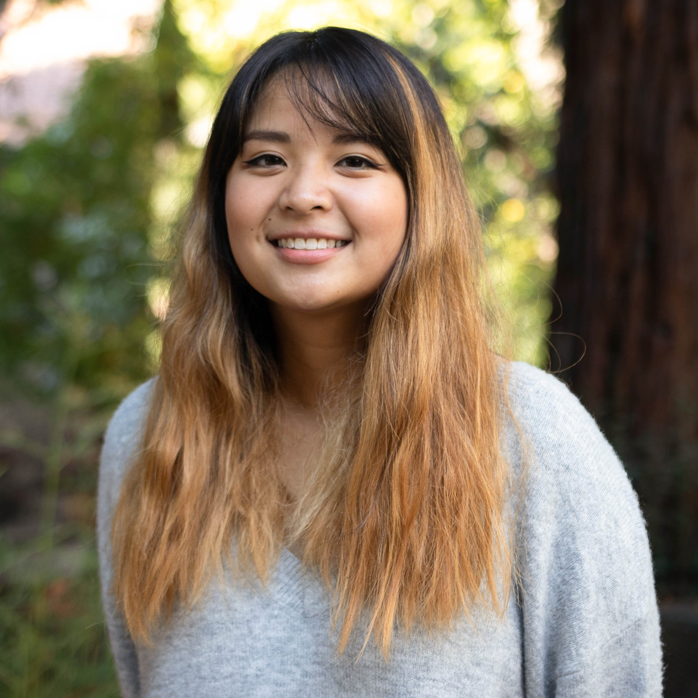

Directors

Richard Pulvera
Executive Director

Kevin Bradley Paule
Recruitment Director

Alyssa Gonzaga
Retention Director

Angelica Santos
Internal Affairs Director
Internal

Diana-Lynn Garza
Operations Coordinator

Nikka S. Sandoval
External Relations Coordinator

Franco Achacoso
Public Relations Coordinator
Retention

Justin Dela Cruz
Gender & Sexuality Awareness Coordinator

Jenina Yutuc
Advocacy Coordinator

Jillian Kristen Perez
PASO Coordinator

Christian Guerrero
Transfer Retention Coordinator
Recruitment

Ryan Nuqui
Outreach Coordinator

Raquel Navarro Calara
SHADOW Coordinator

Unfilled
Youth Mentorship Coordinator

Lorraine Pacilan
Transfer Recruitment Coordinator